June 15, 2026
Project Sections
1. Introduction
Power dividers are fundamental building blocks in RF and microwave systems. They are used whenever an RF signal needs to be distributed between multiple paths, such as antenna arrays, receiver front ends, local oscillator distribution networks, measurement setups, and phased-array architectures. A simple resistive splitter can divide power, but it introduces extra loss and does not provide good isolation between output ports. The Wilkinson power divider solves these issues by combining transmission-line impedance transformation with a carefully placed isolation resistor.
In this project, I designed and analyzed a two-way equal-split Wilkinson power divider. The goal was to start from the theoretical RF design, verify the ideal behavior in ADS, convert the circuit into a physical microstrip implementation, and then evaluate the layout using Momentum EM simulation.
The target design is a three-port network with a 50 Ω system impedance. Ideally, power entering Port 1 is split equally between Ports 2 and 3, resulting in approximately \(-3\ \text{dB}\) transmission to each output. At the center frequency, the input should be well matched, the two outputs should have equal amplitude and phase, and the isolation between the output ports should be high.
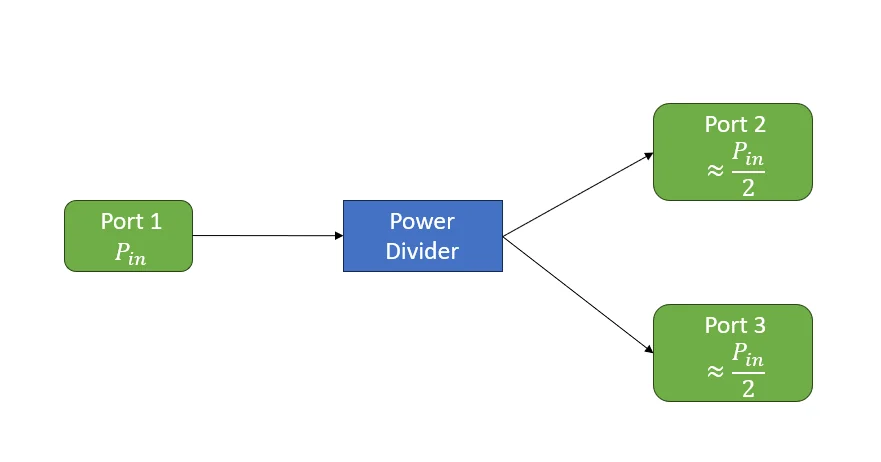
2. Design Goals and Specifications
The design target is a two-way equal-split Wilkinson power divider operating in a 50 Ω RF system. The divider is designed around a single center frequency where the quarter-wave transmission-line sections provide the required impedance transformation and the isolation resistor improves output-port isolation.
For this implementation, the center frequency is 3 GHz. This frequency is high enough for microstrip layout effects to matter, while still allowing practical PCB dimensions on a generic FR-4 stackup.
| Parameter | Target |
|---|---|
| Center frequency | 3 GHz |
| System impedance | 50 Ω |
| Number of ports | 3 |
| Split ratio | Equal split |
| Target transmission | Approximately \(-3\ \text{dB}\) from Port 1 to each output |
| Input match | Low \(S_{11}\) near the center frequency |
| Output match | Low \(S_{22}\) and \(S_{33}\) near the center frequency |
| Output isolation | Low \(S_{23}\) near the center frequency |
| Output phase balance | \(S_{21}\) and \(S_{31}\) approximately equal in phase |
| Implementation | Microstrip |
| Simulation tools | ADS and Momentum |
The workflow was:
- Define the 50 Ω system and center frequency.
- Derive the required branch impedance and isolation resistor.
- Simulate the ideal Wilkinson divider in ADS.
- Convert the ideal design into a microstrip implementation.
- Simulate the physical layout using Momentum.
- Sweep the isolation resistor and transmission-line dimensions.
- Compare the ideal, microstrip, and EM simulation results.
3. Wilkinson Divider Theory and Component Values
A two-way Wilkinson power divider is built from two quarter-wave transmission-line sections and an isolation resistor between the output ports. For an equal-split divider, all ports are designed for the same system impedance, usually 50 Ω.
At the center frequency, Ports 2 and 3 are each terminated with 50 Ω. From the input side, each branch must transform its 50 Ω load into 100 Ω. When the two transformed 100 Ω impedances are placed in parallel, the input sees 50 Ω:
A quarter-wave transmission line transforms a load impedance according to:
For each Wilkinson branch, the desired transformed impedance is 100 Ω and the load is 50 Ω:
The isolation resistor for an equal-split Wilkinson divider is:
During ideal equal-mode operation, the voltages at Ports 2 and 3 are equal in amplitude and phase, so no voltage difference appears across the isolation resistor. Ideally, no current flows through the resistor during normal splitting. When the outputs are unbalanced or a signal is incident at one output port, the resistor dissipates imbalance energy and improves isolation between Ports 2 and 3.
| Parameter | Value |
|---|---|
| System impedance, \(Z_0\) | 50 Ω |
| Branch electrical length | 90° at 3 GHz |
| Branch characteristic impedance | 70.7 Ω |
| Isolation resistor | 100 Ω |
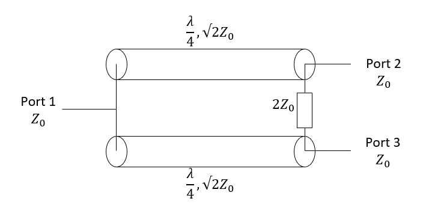
4. Ideal ADS Simulation
After deriving the ideal values, the first simulation step was to build the circuit using ideal transmission-line elements in ADS. This provides a clean theoretical baseline before introducing physical microstrip dimensions, layout discontinuities, conductor loss, dielectric loss, and EM effects.
The ADS model uses three 50 Ω ports. Port 1 is the input port, while Ports 2 and 3 are the output ports. The two divider branches are ideal quarter-wave transmission lines with characteristic impedance \(\sqrt{2}Z_0\), and a \(2Z_0\) resistor is placed between the output ports.
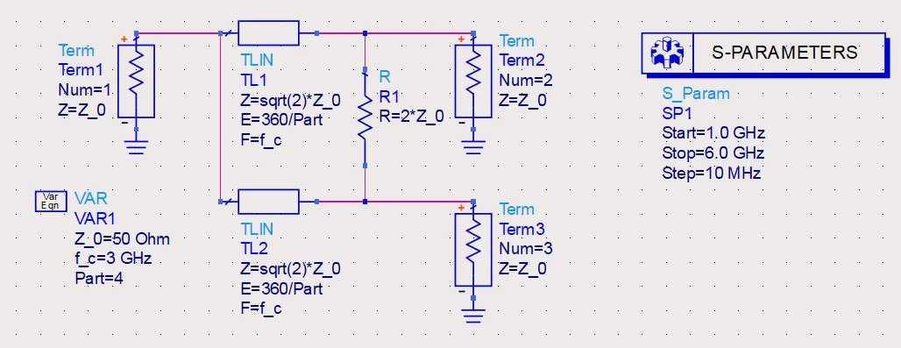
The main S-parameters used to evaluate the divider are \(S_{11}\) for input return loss, \(S_{21}\) and \(S_{31}\) for the power split, \(S_{22}\) and \(S_{33}\) for output return loss, \(S_{23}\) for isolation, and the phase difference between \(S_{21}\) and \(S_{31}\) for output phase balance.
Return loss
The return-loss results show a strong match at the 3 GHz design frequency. \(S_{11}\) reaches a deep minimum at the center frequency, while \(S_{22}\) and \(S_{33}\) also show deep nulls. Because the divider is ideal and symmetric, the output-port return-loss curves overlap.
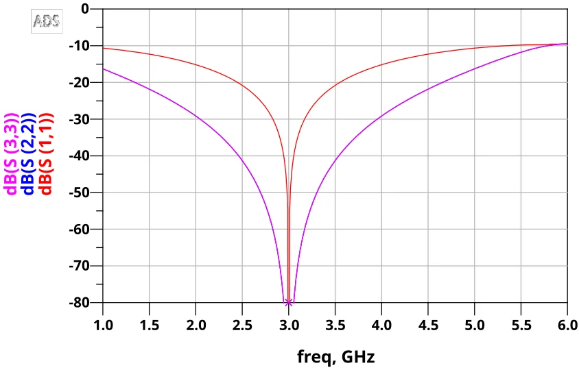
Power split
The transmission plot shows that \(S_{21}\) and \(S_{31}\) overlap, confirming that the divider is symmetric and that both output paths receive equal power. At the design frequency, both traces are approximately \(-3\ \text{dB}\), corresponding to the expected equal split.
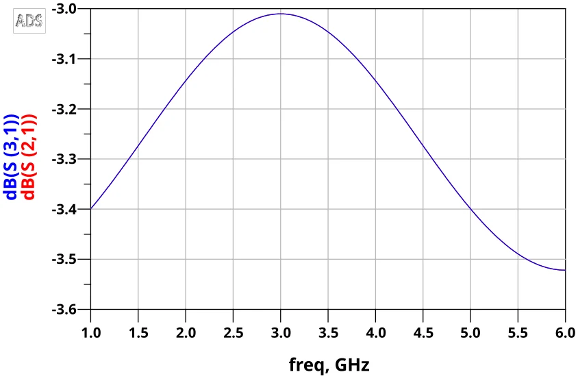
Output isolation
The output isolation plot shows a deep minimum at 3 GHz. This confirms that the \(2Z_0\) resistor provides strong isolation between the two output ports in the ideal Wilkinson divider.
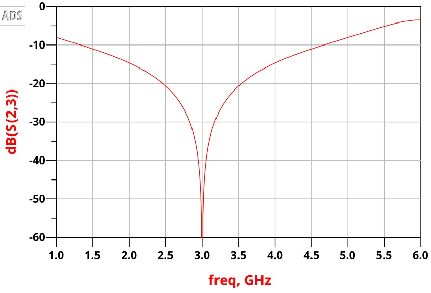
Output phase balance
The phase plot shows that the phases of \(S_{21}\) and \(S_{31}\) track each other across the sweep. The phase difference remains approximately zero, confirming that the two branches are phase balanced.
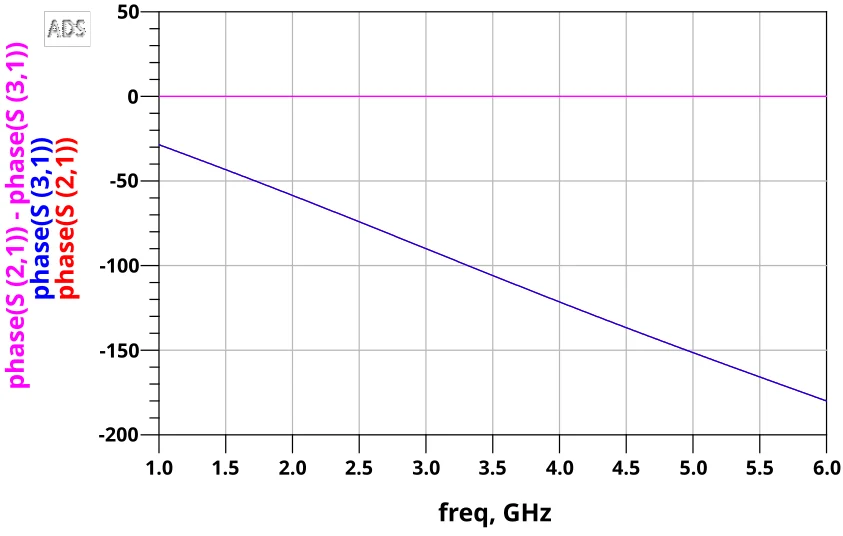
Overall, the ideal ADS simulation verifies the expected Wilkinson divider behavior: equal split, strong matching, high isolation, and near-zero phase imbalance at the design frequency.
5. Isolation Resistor Sweep
After verifying the ideal response, the isolation resistor was swept to show its role in the divider. In the ideal design, the resistor value is \(R = 2Z_0\), or 100 Ω for a 50 Ω system.
The isolation resistor does not create the basic equal power split. In normal equal-mode operation the two output nodes have equal voltage and phase, so ideally no current flows through the resistor. Instead, the resistor mainly improves output isolation and absorbs imbalance energy when the output ports are not perfectly matched.
To study this effect, the resistor was defined as \(R_{\text{iso}}\) and swept from 50 Ω to 150 Ω in 25 Ω steps while the S-parameter simulation swept from 1 GHz to 6 GHz.
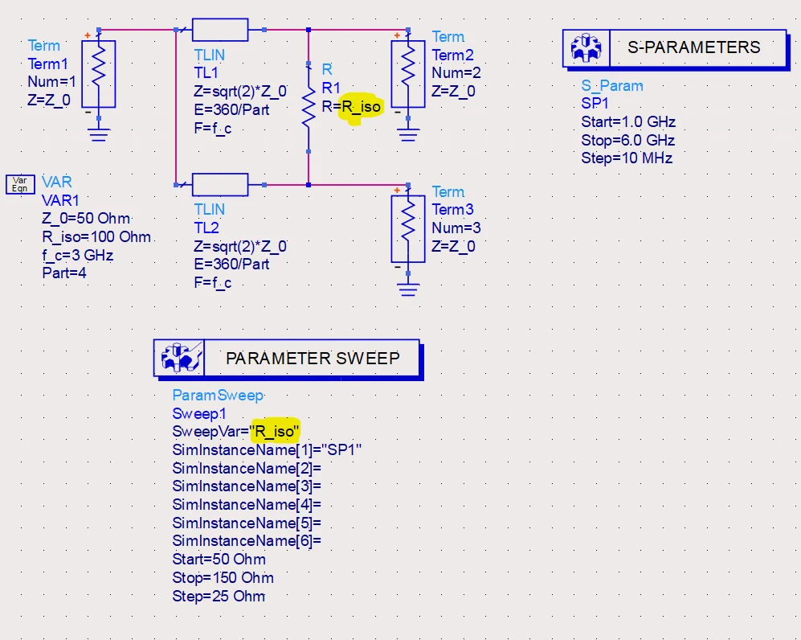
Effect on output isolation
The \(S_{23}\) sweep shows that the 100 Ω resistor provides the deepest isolation null at the 3 GHz design frequency. Reducing or increasing the resistor away from 100 Ω makes the isolation worse and the null shallower.
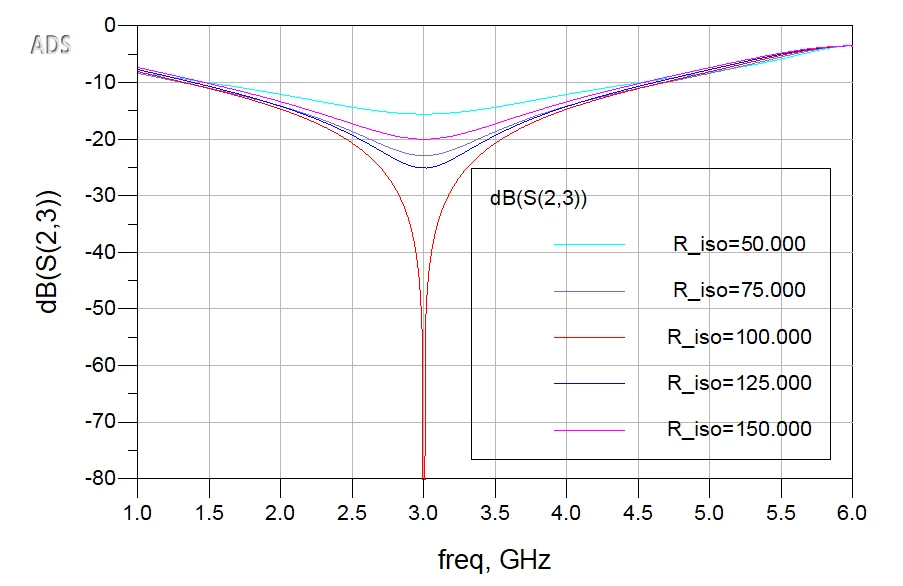
Effect on power split
The \(S_{21}\) result remains close to the expected \(-3\ \text{dB}\) value for all resistor values in the sweep. Compared with the large change in \(S_{23}\), the effect on insertion loss is small. This demonstrates that the power split is mainly set by the two symmetric quarter-wave branches.
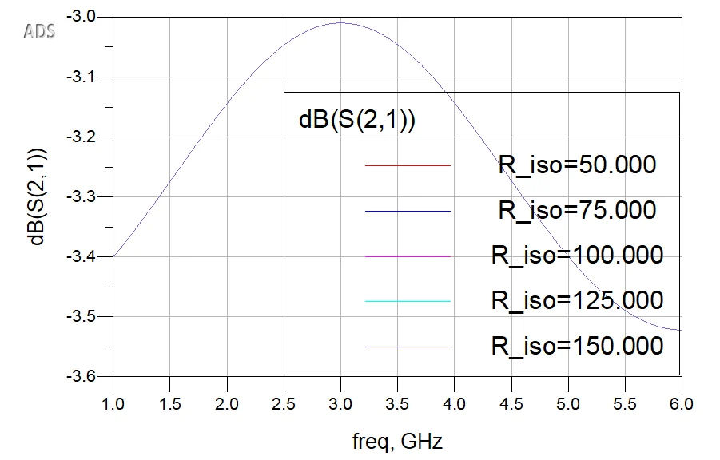
Effect on input match
The \(S_{11}\) sweep remains strongly centered around the 3 GHz design frequency. The curves are very similar across the resistor sweep, indicating that input match is mainly determined by the quarter-wave transformer branches rather than the exact resistor value.
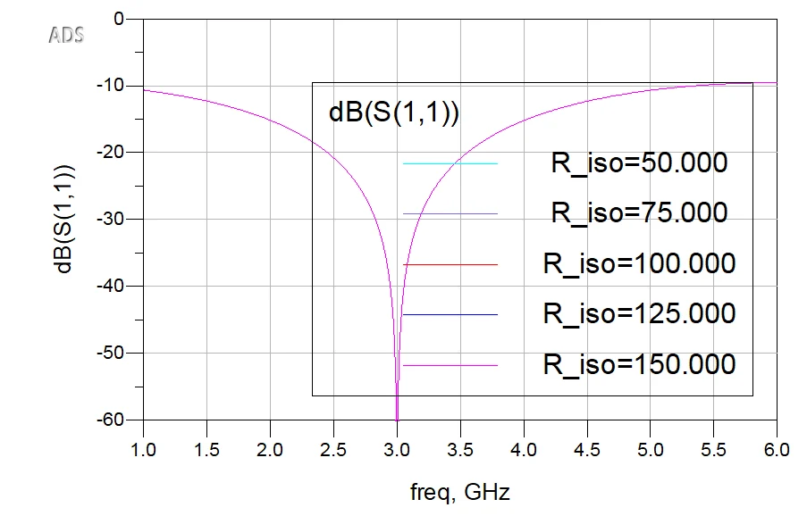
The resistor sweep confirms the expected Wilkinson behavior: the \(2Z_0\) resistor is critical for output-port isolation, but not the main mechanism responsible for the equal split.
6. Microstrip Implementation
After verifying the ideal transmission-line design, the next step was to convert it into a physical microstrip implementation. Unlike ideal TLIN elements, microstrip lines require physical dimensions such as trace width, trace length, substrate height, dielectric constant, copper thickness, and loss tangent.
The implementation uses a two-layer RF PCB structure: top-layer copper traces over an FR-4 dielectric substrate, with a continuous ground plane on the bottom layer.
| Parameter | Value |
|---|---|
| Dielectric constant, \(\varepsilon_r\) | 4.3 |
| Substrate height, h | 1.6 mm |
| Copper thickness, t | 0.035 mm |
| Loss tangent, \(\tan\\delta\) | 0.02 |
| Copper conductivity | \(5.8\times10^7\ \text{S/m}\) |
ADS LineCalc was used to synthesize the physical dimensions for the selected stackup. The 50 Ω feed line was synthesized first, followed by the 70.7 Ω Wilkinson branch.
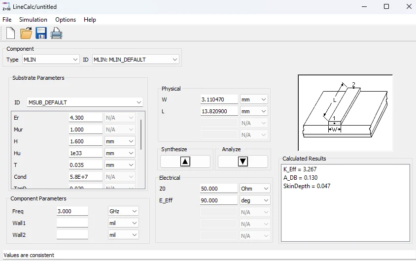
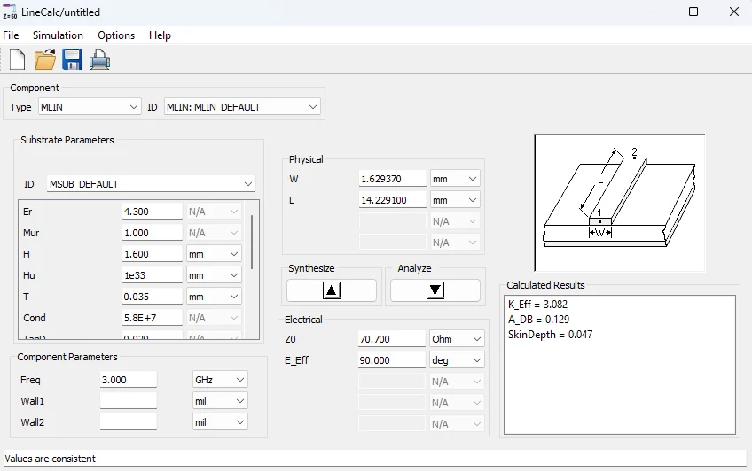
| Line type | Target impedance | Width | Length used |
|---|---|---|---|
| Input/output feed line | 50 Ω | 3.11 mm | 5 mm |
| Wilkinson branch | 70.7 Ω | 1.63 mm | 14.23 mm |
| Isolation resistor | 100 Ω | - | Between output nodes |
MLIN schematic model
The ideal TLIN components were replaced with ADS MLIN components using the same FR-4 substrate definition. The 50 Ω input and output feed lines use 3.11 mm width and 5 mm length. The two Wilkinson branches use 1.63 mm width and 14.23 mm length, with a 100 Ω resistor between the two output nodes.
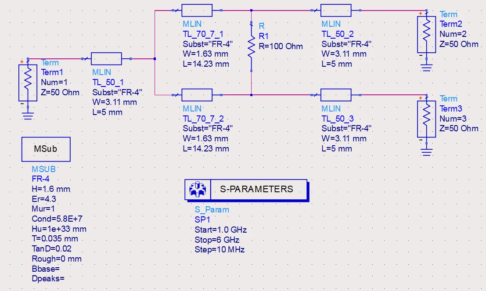
Microstrip schematic results
The return-loss plot shows that the divider remains well matched near 3 GHz. Compared with the ideal TLIN simulation, the nulls are no longer infinitely deep because the MLIN model includes substrate and conductor behavior.
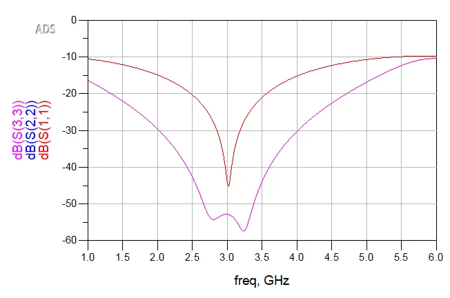
The transmission plot shows that \(S_{21}\) and \(S_{31}\) overlap, confirming equal amplitude split. At the design frequency, the insertion loss is slightly below the ideal \(-3\ \text{dB}\) value because the microstrip model includes conductor and dielectric losses.
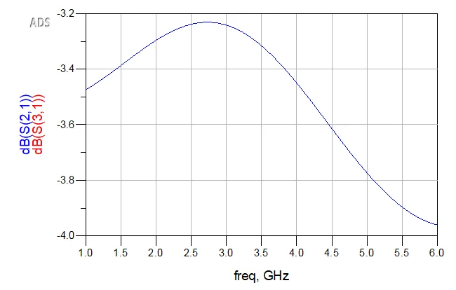
The output isolation remains centered near 3 GHz and shows a strong isolation minimum. This confirms that the 100 Ω isolation resistor still provides the intended isolation when the ideal lines are replaced with physical microstrip elements.
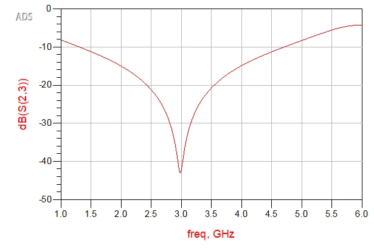
The phase result shows that the two output paths remain phase balanced. The phase wrapping is a normal result of plotting phase across a wide frequency sweep.
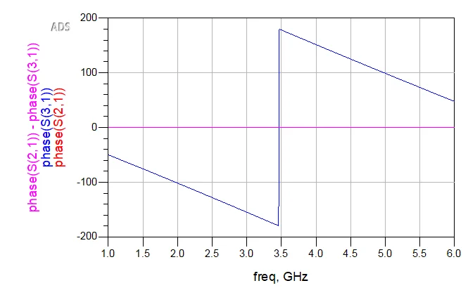
7. Layout Implementation and Momentum EM Simulation
After validating the divider with MLIN elements, the next step was to evaluate it as a physical layout using Momentum EM simulation. The physical layout introduces effects that the schematic model does not fully capture, such as junction discontinuities, curved traces, resistor pad geometry, trace coupling, and port transitions.
The layout geometry was created in Fusion 360 and imported into ADS for Momentum simulation. Fusion made it easier to control the curved branch geometry, pad placement, and layout symmetry before exporting the copper profile.
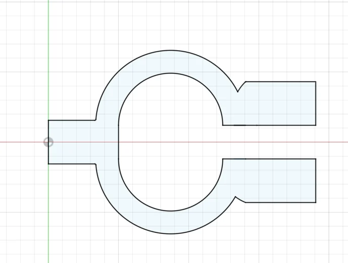
The cleaned copper geometry was imported into ADS layout and assigned to the top conductor layer. The substrate used the same two-layer microstrip structure as the schematic model: top copper over FR-4 dielectric with a continuous bottom ground plane.
Momentum ports were added to the imported layout. Ports 1-3 define the external RF input and output feed lines. Two additional internal ports, Ports 4 and 5, were placed at the resistor pads so the isolation resistor could be connected later in the ADS circuit co-simulation testbench.
The resistor itself was not modeled as a copper object in Momentum. Instead, the copper layout and resistor pads were simulated as a 5-port EM structure. The resulting Momentum component was then placed into an ADS schematic testbench, where a 100 Ω resistor was connected between internal ports 4 and 5.
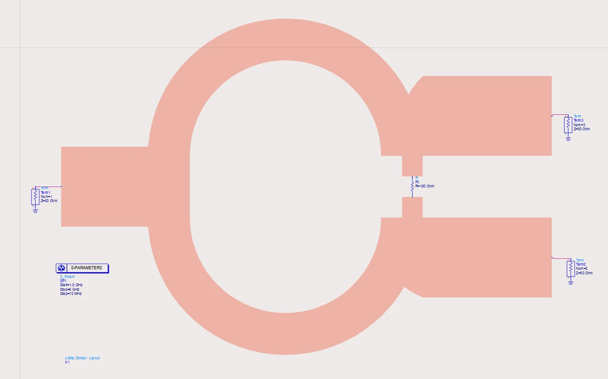
| Parameter | Value |
|---|---|
| Simulation type | Momentum EM + ADS circuit co-simulation |
| Frequency range | 1 GHz to 6 GHz |
| Substrate | FR-4 |
| Top conductor | Copper, 0.035 mm |
| Dielectric height | 1.6 mm |
| External port impedance | 50 Ω |
| Isolation resistor | 100 Ω |
| Resistor connection | Between internal ports 4 and 5 |
Return loss
The Momentum return-loss results show that the physical layout remains well matched around the design frequency. \(S_{11}\) reaches approximately \(-22\ \text{dB}\) near 3 GHz. \(S_{22}\) and \(S_{33}\) overlap closely, confirming that the physical layout maintains good symmetry between the output paths.
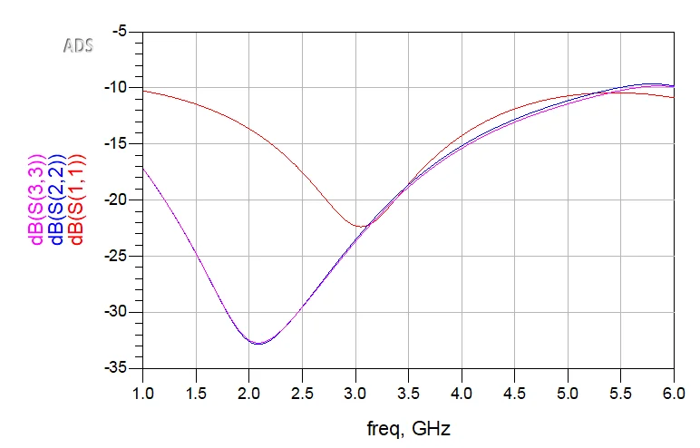
Power split
The transmission results show that \(S_{21}\) and \(S_{31}\) remain closely matched across the sweep. Around the 3 GHz design frequency, both outputs are approximately \(-3.5\ \text{dB}\) to \(-3.6\ \text{dB}\). This is slightly lower than the ideal \(-3\ \text{dB}\) equal split, but the extra loss is expected due to FR-4 dielectric loss, conductor loss, and layout discontinuities.
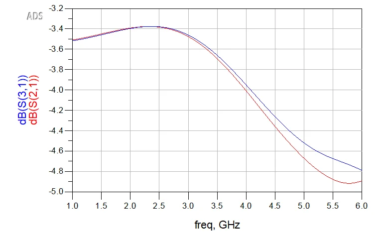
Output isolation
The output isolation result shows a deep isolation minimum near the design frequency, reaching approximately \(-55\ \text{dB}\) around 3.1 GHz. This confirms that the 100 Ω resistor connected between the internal resistor pad ports is providing the intended Wilkinson output isolation.
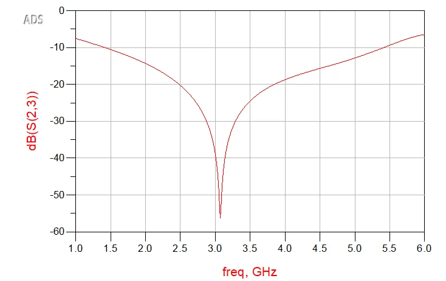
Output phase balance
The phase results show that \(S_{21}\) and \(S_{31}\) track closely. The phase difference remains approximately zero, confirming that the two output paths are phase balanced.
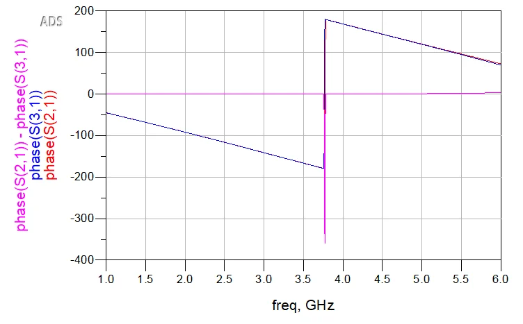
8. Comparison and Discussion
The divider was simulated at three levels of abstraction: an ideal transmission-line model, a microstrip schematic model, and a Momentum EM/circuit co-simulation. Each stage added more physical detail to the design and therefore produced a more realistic result.
The ideal TLIN simulation represents the theoretical Wilkinson divider. It produced nearly perfect matching and isolation at the design frequency. The MLIN schematic simulation replaced the ideal lines with physical microstrip elements based on the selected FR-4 substrate, adding conductor loss, dielectric loss, and dispersion. Finally, the Momentum simulation evaluated the actual copper geometry, including curved branches, junctions, output transitions, resistor pads, and electromagnetic coupling.
| Result | Ideal TLIN | MLIN schematic | Momentum EM/circuit |
|---|---|---|---|
| Input match, \(S_{11}\) | Very deep null at 3 GHz | Deep null near 3 GHz | About \(-22\ \text{dB}\) near 3 GHz |
| Transmission, \(S_{21}\)/\(S_{31}\) | About \(-3\ \text{dB}\) | Slightly below \(-3\ \text{dB}\) | About \(-3.5\ \text{dB}\) to \(-3.6\ \text{dB}\) |
| Output isolation, \(S_{23}\) | Very deep null | Strong null near 3 GHz | About \(-55\ \text{dB}\) near 3.1 GHz |
| Output balance | Ideal overlap | Very close overlap | Very close overlap |
| Phase balance | Approximately 0° difference | Approximately 0° difference | Approximately 0° difference |
The comparison shows that the divider behavior is preserved across all three stages. The most noticeable difference is the increase in insertion loss in the Momentum result. This is expected because the EM/circuit co-simulation includes realistic FR-4 dielectric loss, conductor loss, and layout discontinuities.
The Momentum result also shows that the physical layout shifts and shapes the response compared to the ideal schematic model. The curved branches, resistor pads, and transitions are not ideal transmission-line elements, so they affect the exact matching and isolation behavior. However, the final result still shows the key Wilkinson properties: matched operation near the design frequency, equal output split, high output isolation, and good phase balance.
9. Summary and Engineering Takeaways
This project demonstrated the complete design and simulation flow for a two-way equal-split Wilkinson power divider. The design started from the theoretical component values: two quarter-wave branches with characteristic impedance \(\sqrt{2}Z_0\) and a \(2Z_0\) isolation resistor between the output ports. For a 50 Ω system, this resulted in 70.7 Ω quarter-wave branches and a 100 Ω isolation resistor.
The ideal ADS simulation verified the expected Wilkinson behavior at the 3 GHz design frequency. A resistor sweep then showed that the isolation resistor mainly affects output isolation rather than the basic power split. The best isolation occurred when the resistor was set to \(2Z_0\), while the transmission response remained close to the expected equal-split value.
The design was then converted into a microstrip implementation using a generic FR-4 substrate. ADS LineCalc synthesized the 50 Ω feed lines and 70.7 Ω quarter-wave branches. The MLIN schematic simulation showed that the divider behavior was preserved after replacing ideal transmission lines with physical microstrip elements, while also introducing realistic conductor and dielectric loss.
Finally, the physical layout was imported into ADS Momentum and simulated using EM/circuit co-simulation. The layout included curved quarter-wave branches, physical junctions, output transitions, and resistor pads. The Momentum results showed good input matching near the design frequency, balanced output transmission of approximately \(-3.5\ \text{dB}\) to \(-3.6\ \text{dB}\), strong output isolation near 3.1 GHz, and near-zero phase imbalance between the output paths.
Overall, the project shows how the same RF circuit can be evaluated at multiple levels of abstraction. The ideal simulation verifies the theory, the microstrip schematic checks the physical transmission-line dimensions, and the Momentum simulation validates the actual layout geometry. The final result preserves the key Wilkinson divider behavior while also showing the practical effects introduced by PCB layout and substrate loss.
Back to Portfolio